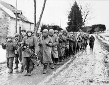
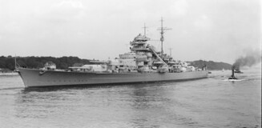
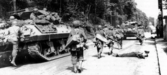

Invasion of France
France declared war on Germany immediately following the invasion of Poland. Germany started its invasion of Belgium, Luxembourg, the Netherlands, and France in 1940. The invasion of France lasted a mere six weeks due to the blitzkrieg tactic used. This was a hard and fast style of attack involving many motarized vehicles and tanks. France officially surrendered on June 22, 1940 at the location of the 1918 Armistice signing.
After the Invasion, France would remain under German occupation until June 6, 1944 following the D-Day invasion in Normandy. During this time Germany used French factories to produce weapons and tanks, as well as adding to their own forces by taking what tanks France had.
Britain and Germany
Britain would fight both in Northern Europe as well as Africa. Britain made up the bulk of the western front as the United States didn't offically join the war until Pearl Harbor in 1941. Britain would fight in the Arctic regions to protect their convoys to the Soviet Union on the eastern front. Germany's main priority on the sea was sinking convoys from the United Kingdom to the Soviet Union as well as the convoys from the United States to Britain as a result of the Lend-Lease Program. When Germany also started it's North African Campagin, Britain sent troops south and remained largely alone in this until the United States joined the war.
United States on the Western Front
After Pearl Harbor, the United States entered the war and as such sent troops to the western front. It would assist Britain in Europe as well as Arfica. Additionally, it would be a key player in D-Day to retake France in 1944. approximately 1.5 million American soldiers would be deployed to fight on the western front.